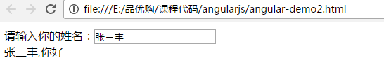

原文连接:https://www.cnblogs.com/amiaojiang/p/11863807.html
品优购-第2天
学习目标
目标1：运用AngularJS前端框架的常用指令
目标2：完成品牌管理的列表功能
目标3：完成品牌管理的分页列表功能
目标4：完成品牌管理的增加功能
目标5：完成品牌管理的修改功能
目标6：完成品牌管理的删除功能
目标7：完成品牌管理的条件查询功能
目标N：通用Mapper
第1章 前端框架AngularJS入门
1.1 AngularJS简介rJS
AngularJS 诞生于2009年，由Misko Hevery 等人创建，后为Google所收购。是一款优秀的前端JS框架，已经被用于Google的多款产品当中。AngularJS有着诸多特性，最为核心的是：MVC、模块化、自动化双向数据绑定、依赖注入等等。
1.2 AngularJS四大特征
1.2.1 MVC模式
Angular遵循软件工程的MVC模式,并鼓励展现，数据，和逻辑组件之间的松耦合.通过依赖注入（dependency injection），Angular为客户端的Web应用带来了传统服务端的服务，例如独立于视图的控制。 因此，后端减少了许多负担，产生了更轻的Web应用。
Model:数据,其实就是angular变量($scope.XX);
View: 数据的呈现,Html+Directive(指令);
Controller:操作数据,就是function,数据的增删改查;
1.2.2 双向绑定
AngularJS是建立在这样的信念上的：即声明式编程应该用于构建用户界面以及编写软件构建，而指令式编程非常适合来表示业务逻辑。框架采用并扩展了传统HTML，通过双向的数据绑定来适应动态内容，双向的数据绑定允许模型和视图之间的自动同步。因此，AngularJS使得对DOM的操作不再重要并提升了可测试性。
1.2.3 依赖注入
依赖注入(Dependency Injection,简称DI)是一种设计模式, 指某个对象依赖的其他对象无需手工创建，只需要“吼一嗓子”，则此对象在创建时，其依赖的对象由框架来自动创建并注入进来,其实就是最少知识法则;模块中所有的service和provider两类对象，都可以根据形参名称实现DI.
1.2.4 模块化设计
高内聚低耦合法则
1)官方提供的模块 ng、ngRoute、ngAnimate
2)用户自定义的模块 angular.module(‘模块名’,[ ])
1.3 入门小Demo
1.3.1 表达式
<html>
<head>
<title>入门小Demo-1</title>
<script src="angular.min.js"></script>
</head>
<body ng-app>
{{100+100}}
</body>
</html>执行结果如下：
表达式的写法是{{表达式 }} 表达式可以是变量或是运算式
ng-app 指令 作用是告诉子元素以下的指令是归angularJs的,angularJs会识别的
ng-app 指令定义了AngularJS 应用程序的 根元素。
ng-app 指令在网页加载完毕时会自动引导（自动初始化）应用程序。
1.3.2 双向绑定
<html>
<head>
<title>入门小Demo-1 双向绑定</title>
<script src="angular.min.js"></script>
</head>
<body ng-app>
请输入你的姓名：<input ng-model="myname">
<br>
{{myname}},你好
</body>
</html>运行效果如下：

ng-model 指令用于绑定变量,这样用户在文本框输入的内容会绑定到变量上，而表达式可以实时地输出变量。
1.3.3 初始化指令
我们如果希望有些变量具有初始值，可以使用ng-init指令来对变量初始化:
<html>
<head>
<title>入门小Demo-3 初始化</title>
<script src="angular.min.js"></script>
</head>
<body ng-app ng-init="myname='陈大海'">
请输入你的姓名：<input ng-model="myname">
<br>
{{myname}},你好
</body>
</html>1.3.4 控制器
<html>
<head>
<title>入门小Demo-3 初始化</title>
<script src="angular.min.js"></script>
<script>
var app=angular.module('myApp',[]); //定义了一个叫myApp的模块
//定义控制器
app.controller('myController',function($scope){
$scope.add=function(){
return parseInt($scope.x)+parseInt($scope.y);
}
});
</script>
</head>
<body ng-app="myApp" ng-controller="myController">
x:<input ng-model="x" >
y:<input ng-model="y" >
运算结果：{{add()}}
</body>
</html>运行结果如下：
ng-controller用于指定所使用的控制器。
理解 $scope：
$scope 的使用贯穿整个 AngularJS App 应用,它与数据模型相关联,同时也是表达式执行的上下文.有了$scope就在视图和控制器之间建立了一个通道,基于作用域视图在修改数据时会立刻更新 $scope,同样的$scope 发生改变时也会立刻重新渲染视图.
1.3.5 事件指令
<html>
<head>
<title>入门小Demo-5 事件指令</title>
<script src="angular.min.js"></script>
<script>
var app=angular.module('myApp',[]); //定义了一个叫myApp的模块
//定义控制器
app.controller('myController',function($scope){
$scope.add=function(){
$scope.z= parseInt($scope.x)+parseInt($scope.y);
}
});
</script>
</head>
<body ng-app="myApp" ng-controller="myController">
x:<input ng-model="x" >
y:<input ng-model="y" >
<button ng-click="add()">运算</button>
结果：{{z}}
</body>
</html>运行结果：
ng-click 是最常用的单击事件指令，再点击时触发控制器的某个方法
1.3.6 循环数组
<html>
<head>
<title>入门小Demo-6 循环数据</title>
<script src="angular.min.js"></script>
<script>
var app=angular.module('myApp',[]); //定义了一个叫myApp的模块
//定义控制器
app.controller('myController',function($scope){
$scope.list= [100,192,203,434 ];//定义数组
});
</script>
</head>
<body ng-app="myApp" ng-controller="myController">
<table>
<tr ng-repeat="x in list">
<td>{{x}}</td>
</tr>
</table>
</body>
</html>这里的ng-repeat指令用于循环数组变量。
运行结果如下：
1.3.7 循环对象数组
<html>
<head>
<title>入门小Demo-7 循环对象数组</title>
<script src="angular.min.js"></script>
<script>
var app=angular.module('myApp',[]); //定义了一个叫myApp的模块
//定义控制器
app.controller('myController',function($scope){
$scope.list= [
{name:'张三',shuxue:100,yuwen:93},
{name:'李四',shuxue:88,yuwen:87},
{name:'王五',shuxue:77,yuwen:56}
];//定义数组
});
</script>
</head>
<body ng-app="myApp" ng-controller="myController">
<table>
<tr>
<td>姓名</td>
<td>数学</td>
<td>语文</td>
</tr>
<tr ng-repeat="entity in list">
<td>{{entity.name}}</td>
<td>{{entity.shuxue}}</td>
<td>{{entity.yuwen}}</td>
</tr>
</table>
</body>
</html>运行结果如下：
1.3.8 内置服务
我们的数据一般都是从后端获取的，那么如何获取数据呢？我们一般使用内置服务$http来实现。注意：以下代码需要在tomcat中运行。
<html>
<head>
<title>入门小Demo-8 内置服务</title>
<meta charset="utf-8" />
<script src="angular.min.js"></script>
<script>
var app=angular.module('myApp',[]); //定义了一个叫myApp的模块
//定义控制器
app.controller('myController',function($scope,$http){
$scope.findAll=function(){
$http.get('data.json').success(
function(response){
$scope.list=response;
}
);
}
});
</script>
</head>
<body ng-app="myApp" ng-controller="myController" ng-init="findAll()">
<table>
<tr>
<td>姓名</td>
<td>数学</td>
<td>语文</td>
</tr>
<tr ng-repeat="entity in list">
<td>{{entity.name}}</td>
<td>{{entity.shuxue}}</td>
<td>{{entity.yuwen}}</td>
</tr>
</table>
</body>
</html>建立文件 data.json
[
{"name":"张三","shuxue":100,"yuwen":93},
{"name":"李四","shuxue":88,"yuwen":87},
{"name":"王五","shuxue":77,"yuwen":56},
{"name":"赵六","shuxue":67,"yuwen":86}
]第2章 通用Mapper
2.1 通用Mapper介绍
通用 Mapper 提供了一些通用的方法，这些通用方法是以接口的形式提供的，它主要简化了我们工作中常做的单表操作问题，让MyBatis由面向过程转换成了面向对象的操作方式，当然，MyBatis编写SQL面向过程操作和通用Mapper面向对象操作可以共存。
为了方便测试，我们在parent工程中引入log日志包,版本如下：
<slf4j.version>1.6.6</slf4j.version>
<log4j.version>1.2.12</log4j.version>包引入如下：
<!-- log start -->
<dependency>
<groupId>log4j</groupId>
<artifactId>log4j</artifactId>
<version>${log4j.version}</version>
</dependency>
<dependency>
<groupId>org.slf4j</groupId>
<artifactId>slf4j-api</artifactId>
<version>${slf4j.version}</version>
</dependency>
<dependency>
<groupId>org.slf4j</groupId>
<artifactId>slf4j-log4j12</artifactId>
<version>${slf4j.version}</version>
</dependency>
<!-- log end -->log4j.properties
log4j.rootLogger=DEBUG,Console
log4j.appender.Console=org.apache.log4j.ConsoleAppender
log4j.appender.Console.layout=org.apache.log4j.PatternLayout
log4j.appender.Console.layout.ConversionPattern=%d [%t] %-5p [%c] - %m%n
log4j.logger.org.apache=DEBUG2.2 配置介绍
使用通用通用Mapper首先需要引入依赖包。
<!--通用Mapper-->
<dependency>
<groupId>tk.mybatis</groupId>
<artifactId>mapper</artifactId>
</dependency>替换MyBatis集成Spring的包扫描bean，修改pinyougou-mapper项目中spring-mybatis.xml
替换前：
<bean class="org.mybatis.spring.mapper.MapperScannerConfigurer"
p:basePackage="com.pinyougou.mapper"
p:sqlSessionFactoryBeanName="sqlSessionFactoryBean" />替换后：
<bean class="tk.mybatis.spring.mapper.MapperScannerConfigurer"
p:basePackage="com.pinyougou.mapper"
p:sqlSessionFactoryBeanName="sqlSessionFactoryBean">
<!--通用接口-->
<property name="properties">
<value>
mappers=tk.mybatis.mapper.common.Mapper
</value>
</property>
</bean>2.3 MyBatis+通用Mapper+Spring集成测试
在pinyougou-sellergoods-service编写测试类
package com.pinyougou;
import org.junit.Before;
import org.junit.Test;
import org.springframework.context.ApplicationContext;
import org.springframework.context.support.ClassPathXmlApplicationContext;
public class MapperTest {
private ApplicationContext act;
@Before
public void init(){
act = new ClassPathXmlApplicationContext("classpath:spring/spring.xml");
}
@Test
public void testSpring(){
String[] names = act.getBeanDefinitionNames();
for (String name : names) {
System.out.println(name);
}
}
}测试结果
addressMapper
areasMapper
brandMapper
citiesMapper
contentCategoryMapper
contentMapper
freightTemplateMapper
goodsDescMapper
goodsMapper
itemCatMapper
itemMapper
orderItemMapper
orderMapper
payLogMapper
provincesMapper
seckillGoodsMapper
seckillOrderMapper
sellerMapper
specificationMapper
specificationOptionMapper
typeTemplateMapper
userMapper这里可以看到每个接口都产生了一个代理对象，并且注入到Spring容器中，而每个接口都继承了Mapper 接口,所以初步可以断定，继承通用Mapper成功，接着我们来使用通用Mapper实现增删改查。
2.4通用Mapper的使用
2.4.1 增加操作
2.4.1.1 不忽略空值-insert
/***
* 增加数据
* 不忽略空值
*/
@Test
public void testInsert(){
Brand brand = new Brand();
brand.setName("深圳黑马训练营");
//brand.setFirstChar("C");
int acount = brandMapper.insert(brand);
System.out.println(acount);
}日志：
当Brand的id、firstChar为空的时候，SQL语句仍然执行了插入操作。
==> Preparing: INSERT INTO tb_brand ( id,name,first_char ) VALUES( ?,?,? )
==> Parameters: null, 深圳黑马训练营(String), null1.4.1.2. 忽略空值-insertSelective
/***
* 增加数据
* 忽略空值
*/
@Test
public void testInsertSelective(){
Brand brand = new Brand();
brand.setName("传智播客-黑马训练营");
//brand.setFirstChar("C");
int acount = brandMapper.insertSelective(brand);
System.out.println(acount);
}日志：
当Brand的id、firstChar为空的时候，SQL语句没有执行了插入操作。
==> Preparing: INSERT INTO tb_brand ( name ) VALUES( ? )
==> Parameters: 传智播客-黑马训练营(String)2.4.2修改操作
2.4.2.1 根据主键修改数据-不忽略空值
/**
* 需改操作
* 不忽略空值
*/
@Test
public void testUpdateByPrimaryKey(){
Brand brand = new Brand();
brand.setId(25L);
//brand.setName("深圳黑马训练营");
brand.setFirstChar("S");
//根据主键修改数据
int mcount = brandMapper.updateByPrimaryKey(brand);
System.out.println(mcount);
}日志：
当name为空的时候，SQL语句仍然执行修改。
==> Preparing: UPDATE tb_brand SET name = ?,first_char = ? WHERE id = ?
==> Parameters: null, S(String), 25(Long)2.4.2.2. 根据主键修改数据-忽略空值
/**
* 需改操作
* 忽略空值
*/
@Test
public void testUpdateByPrimaryKeySelective(){
Brand brand = new Brand();
brand.setId(25L);
brand.setName("深圳黑马训练营");
//brand.setFirstChar("S");
//根据主键修改数据
int mcount = brandMapper.updateByPrimaryKeySelective(brand);
System.out.println(mcount);
}日志：
当name为空的时候，SQL语句不执行修改。
1
2
3
sql
==> Preparing: UPDATE tb_brand SET name = ? WHERE id = ?
==> Parameters: 深圳黑马训练营(String), 25(Long)2.4.2.3构造条件修改数据-不忽略空值
/**
* 构造条件执行修改
* 不忽略空值
*/
@Test
public void testUpdateByExample(){
//firstChar=S
Brand brand = new Brand();
brand.setName("深圳市黑马训练营");
//创建Example对象
Example example = new Example(Brand.class);
//Criteria 用来构造约束条件
Example.Criteria criteria = example.createCriteria();
//第一个参数是Brand对应的属性，第二个参数是属性约束值 相当于 where firstChar=S
criteria.andEqualTo("firstChar","S");
//条件修改数据
int mcount = brandMapper.updateByExample(brand,example);
System.out.println(mcount);
}日志：
criteria.andEqualTo(“firstChar”,“S”); 转换成了这里的SQL语句 where(first_char=?)，这里firstChart为空，但SQL语句仍然执行了修改。
1
2
==> Preparing: UPDATE tb_brand SET name = ?,first_char = ? WHERE ( first_char = ? )
==> Parameters: 深圳市黑马训练营(String), null, S(String)2.4.2.4 构造条件修改数据-忽略空值
/**
* 构造条件执行修改
* 忽略空值
*/
@Test
public void testUpdateByExampleSelective(){
//firstChar=S
Brand brand = new Brand();
brand.setFirstChar("S");
//创建Example对象
Example example = new Example(Brand.class);
//Criteria 用来构造约束条件
Example.Criteria criteria = example.createCriteria();
//第一个参数是Brand对应的属性，第二个参数是属性约束值 相当于 where name='深圳市黑马训练营'
criteria.andEqualTo("name","深圳市黑马训练营");
//条件修改数据
int mcount = brandMapper.updateByExampleSelective(brand,example);
System.out.println(mcount);
}日志：
这里name为空，SQL语句并没有做出修改操作。
==> Preparing: UPDATE tb_brand SET first_char = ? WHERE ( name = ? )
==> Parameters: S(String), 深圳市黑马训练营(String)2.4.3查询操作
1.4.3.1. 根据主键查询
/***
* 根据主键查询
*/
@Test
public void testSelectByPrimaryKey(){
long id = 25L;
Brand brand = brandMapper.selectByPrimaryKey(id);
System.out.println(brand);
}日志：
==> Preparing: SELECT id,name,first_char FROM tb_brand WHERE id = ?
==> Parameters: 25(Long)
Brand{id=25, name='深圳市黑马训练营', firstChar='S'}2.4.3.1查询单条记录
/***
* 查询单个记录
*/
@Test
public void testSelectOne(){
Brand brand = new Brand();
brand.setId(25L);
brand.setName("深圳市黑马训练营");
Brand brand1 = brandMapper.selectOne(brand);
System.out.println(brand1);
}日志：
==> Preparing: SELECT id,name,first_char FROM tb_brand WHERE id = ? AND name = ?
==> Parameters: 25(Long), 深圳市黑马训练营(String)
Brand{id=25, name='深圳市黑马训练营', firstChar='S'}注意：
这里需要注意一下，复合该条件的数据，数据库里必须<=1条，如果大于了1条数据，则会报错
TooManyResultsException: Expected one result (or null) to be returned by selectOne(), but found: 32.4.3.2 根据条件查询-Example
/***
* 根据条件执行查询
*/
@Test
public void testExample(){
Example example = new Example(Brand.class);
Example.Criteria criteria = example.createCriteria();
//id IN(1,2,5,6)
List<Long> ids = new ArrayList<Long>();
ids.add(1L);
ids.add(2L);
ids.add(5L);
ids.add(6L);
//第二个参数是个集合对象即可，注意集合对象这里对应的类型虽然是Object，不过要和你数据库对应的类型保持一致
criteria.andIn("id",ids);
//执行查询
List<Brand> brands = brandMapper.selectByExample(example);
for (Brand brand : brands) {
System.out.println(brand);
}
}日志：
==> Preparing: SELECT id,name,first_char FROM tb_brand WHERE ( id in ( ? , ? , ? , ? ) )
==> Parameters: 1(Long), 2(Long), 5(Long), 6(Long)
Brand{id=1, name='联想', firstChar='L'}
Brand{id=2, name='华为', firstChar='H'}
Brand{id=5, name='OPPO', firstChar='O'}
Brand{id=6, name='深圳市黑马训练营', firstChar='S'}2.4.3.3 根据条件查询-JavaBean
/***
* 根据条件查询
* 入参：JavaBean
*/
@Test
public void testSelect(){
Brand brand = new Brand();
brand.setId(25L);
brand.setName("深圳市黑马训练营");
//把brand作为查询条件，这里会忽略空值
List<Brand> brands = brandMapper.select(brand);
for (Brand bd : brands) {
System.out.println(bd);
}
}日志：
==> Preparing: SELECT id,name,first_char FROM tb_brand WHERE id = ? AND name = ?
==> Parameters: 25(Long), 深圳市黑马训练营(String)
Brand{id=25, name='深圳市黑马训练营', firstChar='S'}2.4.3.4 查询所有
/***
* 查询所有
*/
@Test
public void testSelectAll(){
//执行查询
List<Brand> brands = brandMapper.selectAll();
for (Brand brand : brands) {
System.out.println(brand);
}
}日志：
==> Preparing: SELECT id,name,first_char FROM tb_brand
==> Parameters:
Brand{id=1, name='联想', firstChar='L'}
Brand{id=2, name='华为', firstChar='H'}
Brand{id=3, name='深圳市黑马训练营', firstChar='S'}
...........................................2.4.3.5 统计查询
/***
* 统计查询-总记录数
*/
@Test
public void testSelectCount(){
//查询总记录数
int count = brandMapper.selectCount(null);
System.out.println(count);
}日志：
==> Preparing: SELECT COUNT(id) FROM tb_brand
==> Parameters:
252.4.4 删除操作
2.4.4.1 根据主键删除
/***
* 根据ID删除
*/
@Test
public void testDeleteByPrimaryKey(){
long id = 25;
int dcount = brandMapper.deleteByPrimaryKey(id);
System.out.println(dcount);
}日志：
==> Preparing: DELETE FROM tb_brand WHERE id = ?
==> Parameters: 25(Long)2.4.4.2 条件删除-Example
/***
* 条件删除
*/
@Test
public void testDeleteByExample(){
Example example = new Example(Brand.class);
Example.Criteria criteria = example.createCriteria();
//where id between 23 and 28
criteria.andBetween("id",23L,28L);
//根据条件删除
int dcount = brandMapper.deleteByExample(example);
System.out.println(dcount);
}日志：
==> Preparing: DELETE FROM tb_brand WHERE ( id between ? and ? )
==> Parameters: 23(Long), 28(Long)2.4.4.3 条件删除-JavaBean
/***
* 条件删除
* 入参：javaBean
*/
@Test
public void testDelete(){
Brand brand = new Brand();
brand.setName("阿凡达");
//根据条件删除
int dcount = brandMapper.delete(brand);
System.out.println(dcount);
}日志：
==> Preparing: DELETE FROM tb_brand WHERE name = ?
==> Parameters: 阿凡达(String)第3章 分页工具
在做项目的时候，分页属于很常见的，但通常都有繁琐的封装。这里提供了一个通用分页插件pagehelper，能满足我们工作中的基本需求。
3.1 配置介绍
首先需要引入对应的依赖
<!--分页工具包-->
<dependency>
<groupId>com.github.pagehelper</groupId>
<artifactId>pagehelper</artifactId>
</dependency>然后需要配置一个mybatis拦截器，在pinyougou-mapper项目的mybatis.xml中加入如下插件代码
<plugins>
<!-- com.github.pagehelper为PageInterceptor类所在包名 -->
<plugin interceptor="com.github.pagehelper.PageInterceptor">
<property name="reasonable" value="true"/>
</plugin>
</plugins>上述配置也可以不配置在mybatis.xml中，也可以配置在spring-mybatis.xml的SqlSessionFactoryBean中，代码如下：
<!-- SqlSessionFactoryBean -->
<bean id="sqlSessionFactoryBean" class="org.mybatis.spring.SqlSessionFactoryBean">
<property name="configLocation" value="classpath:mybatis/mybatis.xml" />
<property name="typeAliasesPackage" value="com.pinyougou.model" />
<property name="mapperLocations">
<list>
<value>classpath:com/pinyougou/mapper/*Mapper.xml</value>
</list>
</property>
<property name="dataSource" ref="dataSource" />
<!--分页插件配置-->
<property name="plugins">
<array>
<bean class="com.github.pagehelper.PageInterceptor">
<!--配置分页属性-->
<property name="properties">
<props>
<!--指定数据库方言-->
<prop key="helperDialect">mysql</prop>
<!--合理化分页操作-->
<prop key="reasonable">true</prop>
</props>
</property>
</bean>
</array>
</property>
</bean>3.2 分页类介绍
PageInfo类既包含我们工作中的分页信息，也包含分页查询的集合对象，所以很实用，如下代码：
public class PageInfo<T> implements Serializable {
private static final long serialVersionUID = 1L;
//当前页
private int pageNum;
//每页的数量
private int pageSize;
//当前页的数量
private int size;
//当前页面第一个元素在数据库中的行号
private int startRow;
//当前页面最后一个元素在数据库中的行号
private int endRow;
//总记录数
private long total;
//总页数
private int pages;
//结果集
private List<T> list;
//前一页
private int prePage;
//下一页
private int nextPage;
//是否为第一页
private boolean isFirstPage = false;
//是否为最后一页
private boolean isLastPage = false;
//是否有前一页
private boolean hasPreviousPage = false;
//是否有下一页
private boolean hasNextPage = false;
//导航页码数
private int navigatePages;
//所有导航页号
private int[] navigatepageNums;
//导航条上的第一页
private int navigateFirstPage;
//导航条上的最后一页
private int navigateLastPage;
//........略
}3.3 分页插件的使用
分页插件的使用很简单，配置好了后，直接调用PageHelper的静态方法startPage即可实现分页，其他查询正常写就行了，注意一点，调用startPage的方法必须写在执行查询selectAll()前面，否则分页无效。
/**
* 分页测试
*/
@Test
public void testPage(){
//page 当前页 size 每页显示多少条
int page = 1,size=10;
//分页处理,只需要调用PageHelper.startPage静态方法即可。S
PageHelper.startPage(page,size);
//查询
List<Brand> brands = brandMapper.selectAll();
//获取分页信息,注意这里传入了brands集合对象
PageInfo<Brand> pageInfo = new PageInfo<Brand>(brands);
System.out.println(pageInfo);
}日志:
==> Preparing: SELECT count(0) FROM tb_brand
==> Parameters:
------------------------------------------------------------------------------------------------------------------------------------------------
==> Preparing: SELECT id,name,first_char FROM tb_brand LIMIT ?
==> Parameters: 10(Integer)
------------------------------------------------------------------------------------------------------------------------------------------------
PageInfo{pageNum=1, pageSize=10, size=10, startRow=1, endRow=10, total=22, pages=3, list=Page{count=true, pageNum=1, pageSize=10, startRow=0, endRow=10, total=22, pages=3, reasonable=true, pageSizeZero=false}, prePage=0, nextPage=2, isFirstPage=true, isLastPage=false, hasPreviousPage=false, hasNextPage=true, navigatePages=8, navigateFirstPage=1, navigateLastPage=3, navigatepageNums=[1, 2, 3]}第4章 品牌列表的实现
品牌分页实现，记得再pinyougou-sellergoods-interface中引入分页包
<!--分页工具包-->
<dependency>
<groupId>com.github.pagehelper</groupId>
<artifactId>pagehelper</artifactId>
</dependency>4.1 需求分析
实现品牌列表的查询（不用分页和条件查询）效果如下：
4.2 前端代码
4.2.1 拷贝资源
将“资源/静态原型/运营商管理后台”下的页面资源拷贝到pinyougou-manager-web下
其中plugins文件夹中包括了angularJS 、bootstrap、JQuery等常用前端库，我们将在项目中用到
4.2.2 引入JS
修改brand.html ，引入JS
<script src="/plugins/angularjs/angular.min.js"></script>指定模块和控制器
<body ng-app="pinyougou" ng-controller="brandController" class="hold-transition skin-red sidebar-mini">ng-app 指令中定义的就是模块的名称
ng-controller 指令用于为你的应用添加控制器。
在控制器中，你可以编写代码，制作函数和变量，并使用 scope 对象来访问。
4.2.3 编写JS代码
<script>
/******
* 1、引入angularjs
* 2、发送请求
* 3、显示数据
*****/
//定义一个模块
var app = angular.module("pinyougou",[]);
/*****
* 定义一个controller
* 发送HTTP请求从后台获取数据
****/
app.controller("brandController",function($scope,$http){
//创建一个方法
//获取所有的品牌信息
$scope.getPage=function(page,size){
//发送请求获取数据
$http.post("/brand/list.shtml?page="+page+"&size="+size).success(function(response){
//集合数据
$scope.list = response.list;
});
}
});
</script>4.3.4 循环显示表格数据
<tbody>
<tr ng-repeat="entity in list">
<td><input type="checkbox" ng-model="id" ></td>
<td>{{entity.id}}</td>
<td>{{entity.name}}</td>
<td>{{entity.firstChar}}</td>
<td class="text-center">
<button type="button" class="btn bg-olive btn-xs" data-toggle="modal" data-target="#editModal" >修改</button>
</td>
</tr>
</tbody>4.3.5 初始化调用
<body ng-app="pinyougou" ng-controller="brandController" ng-init="getPage(1,10)" class="hold-transition skin-red sidebar-mini">第5章 品牌列表分页的实现
5.1 需求分析
在品牌管理下方放置分页栏，实现分页功能
5.2 后端代码
5.2.1 服务接口层
在pinyougou-sellergoods-interface的BrandService.java 增加方法定义
/***
* 分页返回列表
* @param pageNum
* @param pageSize
* @return
*/
public PageInfo<Brand> getAll(int pageNum, int pageSize);5.2.2 服务实现层
在pinyougou-sellergoods-service的BrandServiceImpl.java中实现该方法y:
public PageInfo<Brand> getAll(int pageNum, int pageSize) {
//执行分页
PageHelper.startPage(pageNum,pageSize);
//List<Brand> all = brandMapper.getAllBrand();
List<Brand> all = brandMapper.selectAll();
PageInfo<Brand> pageInfo = new PageInfo<Brand>(all);
return pageInfo;
}PageHelper为MyBatis分页插件
5.2.3 控制层
在pinyougou-manager-web工程的BrandController.java新增方法
/***
* 分页查询数据
* 获取JSON数据
* @return
*/
@RequestMapping(value = "/list")
public PageInfo<Brand> list(@RequestParam(value = "page", required = false, defaultValue = "1") int page,
@RequestParam(value = "size", required = false, defaultValue = "10") int size) {
return brandService.getAll(page, size);
}5.3 前端代码控制层
5.3.1 HTML
在brand.html引入分页组件
<!--分页相关引入-->
<link rel="stylesheet" href="/plugins/angularjs/pagination.css">
<script src="/plugins/angularjs/pagination.js"></script>构建app模块时引入pagination模块
//定义一个模块
var app = angular.module("pinyougou",["pagination"]); //引入分页模块页面的表格下放置分页组件
<!--分页-->
<tm-pagination conf="paginationConf"></tm-pagination>5.3.2 JS代码
在brandController中添加如下代码
/***
* 分页控件配置
* currentPage:当前页
* totalItems:共有多少条记录
* itemsPerPage:每页显示多少条
* perPageOptions:每页多少条选项条
* onChange:参数发生变化时执行
* */
$scope.paginationConf = {
currentPage: 1,
totalItems: 10,
itemsPerPage: 10,
perPageOptions: [10, 20, 30, 40, 50],
onChange: function(){
$scope.reloadList();//重新加载
}
};
//重新加载
$scope.reloadList=function(){
$scope.getPage($scope.paginationConf.currentPage,$scope.paginationConf.itemsPerPage);
}在页面的body元素上去掉ng-init指令的调用
<body ng-app="pinyougou" ng-controller="brandController" class="hold-transition skin-red sidebar-mini">5.3.3 完整代码
<script>
/******
* 步骤分析：
* 1、引入angularjs
* 2、发送请求
* 3、显示数据
*****/
//定义一个模块
var app = angular.module("pinyougou",["pagination"]);
/*****
* 定义一个controller
* 发送HTTP请求从后台获取数据
****/
app.controller("brandController",function($scope,$http){
/***
* 分页控件配置
* currentPage:当前页
* totalItems:共有多少条记录
* itemsPerPage:每页显示多少条
* perPageOptions:每页多少条选项条
* onChange:参数发生变化时执行
* */
$scope.paginationConf = {
currentPage: 1,
totalItems: 10,
itemsPerPage: 10,
perPageOptions: [10, 20, 30, 40, 50],
onChange: function(){
$scope.reloadList();//重新加载
}
};
//创建一个方法
//获取所有的品牌信息
$scope.getPage=function(page,size){
//发送请求获取数据
$http.post("/brand/list.shtml?page="+page+"&size="+size).success(function(response){
//集合数据
$scope.list = response.list;
//分页数据
$scope.paginationConf.totalItems=response.total;
});
}
//重新加载
$scope.reloadList=function(){
$scope.getPage($scope.paginationConf.currentPage,$scope.paginationConf.itemsPerPage);
}
});
</script>5.3.4 效果
第6章 增加品牌
6.1 需求分析
实现品牌增加功能
6.2 后端代码
6.2.1 控制层
在pinyougou-manager-web的BrandController中增加add方法，同时相应JSON数据。
/***
* 增加品牌数据
* @param brand
* 响应数据：success
* true:成功 false：失败
* message
* 响应的消息
*
*/
@RequestMapping(value = "/add",method = RequestMethod.POST)
public Map<String,Object> add(@RequestBody Brand brand){
//存放响应消息
Map<String,Object> dataMap = new HashMap<String,Object>();
try {
//执行增加
int acount = brandService.add(brand);
if(acount>0){
//增加成功
dataMap.put("success",true);
dataMap.put("message","增加品牌成功");
}
} catch (Exception e) {
e.printStackTrace();
dataMap.put("success",false);
dataMap.put("message","增加品牌失败");
}
return dataMap;
}6.2.2 服务接口层
在pinyougou-sellergoods-interface的BrandService.java新增方法定义
/***
* 增加品牌信息
* @param brand
* @return
*/
int add(Brand brand);6.2.3 服务实现层
在com.pinyougou.sellergoods.service.impl的BrandServiceImpl.java实现该方法
@Override
public int add(Brand brand) {
return brandMapper.insertSelective(brand);
}6.3 前端代码
6.3.1 js代码
//添加品牌方法
$scope.save = function(){
//发送Http请求，执行增加
$http.post("/brand/add.shtml",$scope.entity).success(function(response){
//判断执行状态
if(response.success){
//重新加载新的数据
$scope.reloadList();
}else{
//打印错误消息
alert(response.message);
}
});
}6.3.2 html代码
绑定表单元素，我们用ng-model指令，绑定按钮的单击事件我们用ng-click
<!-- 编辑窗口 -->
<div class="modal fade" id="editModal" tabindex="-1" role="dialog" aria-labelledby="myModalLabel" aria-hidden="true">
<div class="modal-dialog" >
<div class="modal-content">
<div class="modal-header">
<button type="button" class="close" data-dismiss="modal" aria-hidden="true">×</button>
<h3 id="myModalLabel">品牌编辑</h3>
</div>
<div class="modal-body">
<table class="table table-bordered table-striped" width="800px">
<tr>
<td>品牌名称</td>
<td><input ng-model="entity.name" class="form-control" placeholder="品牌名称" > </td>
</tr>
<tr>
<td>首字母</td>
<td><input ng-model="entity.firstChar" class="form-control" placeholder="首字母"> </td>
</tr>
</table>
</div>
<div class="modal-footer">
<button ng-click="save()" class="btn btn-success" data-dismiss="modal" aria-hidden="true">保存</button>
<button class="btn btn-default" data-dismiss="modal" aria-hidden="true">关闭</button>
</div>
</div>
</div>
</div>6.3.3 效果
6.4 增加缓存解决
为了每次打开窗口没有遗留上次的数据，我们可以修改新建按钮，对entity变量进行清空操作
<button ng-click="entity={}" type="button" class="btn btn-default" title="新建" data-toggle="modal" data-target="#editModal" ><i class="fa fa-file-o"></i> 新建</button>效果
-第二天14.png)
6.5 封装响应消息体
6.5.1 封装介绍
响应消息体我们写的是一个Map，每次需要用到的时候，都要重复创建这个Map对象，并重复给指定的key赋值，存在大量重复代码，而且每次key容易书写错，所以我们可以考虑封装成一个实体Bean，名字叫Result，每次直接new Result()即可。
6.5.2 创建Result
由于Result可能会在很多项目中都会用到，所以我们可以考虑把它放到pinyougou-common项目中，在pinyougou-common中创建Result类
package com.pinyougou.http;
import java.io.Serializable;
public class Result implements Serializable {
private boolean success;
private String message;
public Result(boolean success, String message) {
this.success = success;
this.message = message;
}
public Result(boolean success) {
this.success = success;
}
public Result(String message) {
this.message = message;
}
public Result() {
}
//get.. set.. toString..
}6.5.3 依赖关系分析
无论是哪个项目都直接或者间接依赖了pinyougou-pojo，所以可以让pojo依赖pinyougou-common，maven有依赖的传递性，则所有项目都会依赖pinyougou-common，而pinyougou-common主要用来写一些常用的工具包，所以任何项目依赖他都合情合理。
在pinyougou-pojo的pom.xml中加入依赖
<!--依赖pinyougou-common-->
<dependency>
<artifactId>pinyougou-common</artifactId>
<groupId>com.pinyougou</groupId>
<version>1.0-SNAPSHOT</version>
</dependency>6.5.4 修改Controllerl
修改pinyougou-manager-web中的BrandController的add方法:
/***
* 增加品牌数据
* @param brand
* 响应数据：success
* true:成功 false：失败
* message
* 响应的消息
*
*/
@RequestMapping(value = "/add",method = RequestMethod.POST)
public Result add(@RequestBody Brand brand){
try {
//执行增加
int acount = brandService.add(brand);
if(acount>0){
//增加成功
return new Result(true,"增加品牌成功");
}
} catch (Exception e) {
e.printStackTrace();
}
return new Result(false,"增加品牌失败");
}第7章 修改品牌
7.1 需求分析
点击列表的修改按钮，弹出窗口，修改数据后点“保存”执行保存操作,大概分为2个步骤。
第一：根据ID查询出品牌数据，展示出来。
第二：根据用户修改保存数据。
7.2 后端代码
7.2.1 控制层
在pinyougou-manager-web的BrandController中分别加入根据id查询和修改品牌的方法
/***
* 修改品牌信息
* @param brand
* @return
*/
@RequestMapping(value = "/update",method = RequestMethod.POST)
public Result modify(@RequestBody Brand brand){
try {
//根据ID修改品牌信息
int mcount = brandService.updateBrandById(brand);
if(mcount>0){
return new Result(true,"品牌修改成功");
}
} catch (Exception e) {
e.printStackTrace();
}
return new Result(false,"品牌修改失败");
}
/***
* 根据ID查询品牌信息
* @param id
* @return
*/
@RequestMapping(value = "/{id}",method = RequestMethod.GET)
public Brand getById(@PathVariable(value = "id")long id){
//根据ID查询品牌信息
Brand brand = brandService.getOneById(id);
return brand;
}7.2.2 服务接口层
在pinyougou-sellergoods-interface的BrandService.java新增方法定义
/***
* 根据ID查询品牌信息
* @param id
* @return
*/
Brand getOneById(long id);
/***
* 根据ID修改品牌信息
* @param brand
* @return
*/
int updateBrandById(Brand brand);7.2.3 服务实现层
在pinyougou-sellergoods-service的BrandServiceImpl.java新增方法实现
@Override
public Brand getOneById(long id) {
return brandMapper.selectByPrimaryKey(id);
}
@Override
public int updateBrandById(Brand brand) {
return brandMapper.updateByPrimaryKeySelective(brand);
}7.3 前端代码
7.3.1 实现数据查询
增加JS代码;
//根据ID查询品牌信息
$scope.getById=function(id){
$http.get("/brand/"+id+".shtml").success(function(response){
//将后台的数据绑定到前台
$scope.entity=response;
});
}修改列表中的“修改”按钮，调用此方法执行查询实体的操作
<button ng-click="getById(entity.id)" type="button" class="btn bg-olive btn-xs" data-toggle="modal" data-target="#editModal">修改</button>7.3.2 保存数据
修改JS的save方法
//添加或者修改品牌方法
$scope.save = function(){
//发送Http请求，执行增加
var url="/brand/add.shtml";
if($scope.entity.id!=null){
//执行修改数据
url="/brand/update.shtml";
}
//执行操作
$http.post(url,$scope.entity).success(function(response){
//判断执行状态
if(response.success){
//重新加载新的数据
$scope.reloadList();
}else{
//打印错误消息
alert(response.message);
}
});
}第8章 删除品牌
8.1 需求分析
点击列表前的复选框，点击删除按钮，删除选中的品牌。
8.2 后端代码
8.2.1 控制层
在BrandController中加入删除方法
/***
* 根据ID批量删除
* @param ids
* @return
*/
@RequestMapping(value = "/delete")
public Result delete(@RequestBody List<Long> ids){
try {
//根据ID删除数据
int dcount = brandService.deleteByIds(ids);
if(dcount>0){
return new Result(true,"品牌删除成功");
}
} catch (Exception e) {
e.printStackTrace();
}
return new Result(false,"品牌删除失败");
}8.2.2 服务接口层
在pinyougou-sellergoods-interface的BrandService.java接口定义方法
/***
* 根据ID批量删除品牌信息
* @param ids
* @return
*/
int deleteByIds(List<Long> ids);8.2.3 服务实现层
在pinyougou-sellergoods-service的BrandServiceImpl.java实现该方法
@Override
public int deleteByIds(List<Long> ids) {
//创建Example，来构建根据ID删除数据
Example example = new Example(Brand.class);
Example.Criteria criteria = example.createCriteria();
//所需的SQL语句类似 delete from tb_brand where id in(1,2,5,6)
criteria.andIn("id",ids);
return brandMapper.deleteByExample(example);
}8.3 前端代码
8.3.1 js
主要思路：我们需要定义一个用于存储选中ID的数组，当我们点击复选框后判断是选择还是取消选择，如果是选择就加到数组中，如果是取消选择就从数组中移除。在点击删除按钮时需要用到这个存储了ID的数组。
这里我们补充一下JS的关于数组操作的知识
数组的push方法：向数组中添加元素
数组的splice方法：从数组的指定位置移除指定个数的元素 ，参数1为位置 ，参数2位移除的个数
复选框的checked属性：用于判断是否被选中:
//定义一个变量，用于存储要删除的品牌ID
$scope.selectids=[];
//判断当前点击是否要删除对应品牌
$scope.updateSelection=function($event,id){
//判断当前操作是否是选中复选框
if($event.target.checked){
//如果选中复选框，则将该id增加到数组中去
$scope.selectids.push(id);
}else{
//取消删除，则从数组中移除该id
var idx = $scope.selectids.indexOf(id); //获取id对应的下标
$scope.selectids.splice(idx, 1);//删除对应下标的数据，1表示删除的数量
}
}
//批量删除
$scope.delete=function(){
$http.post("/brand/delete.shtml",$scope.selectids).success(function(response){
//判断删除状态
if(response.success){
$scope.reloadList();
}else{
alert(response.message);
}
});
}8.3.2 HTML
修改列表的复选框
<input type="checkbox" ng-click="updateSelection($event,entity.id)" >修改删除按钮
<button ng-click="delete()" type="button" class="btn btn-default" title="删除" ><i class="fa fa-trash-o"></i> 删除</button>第9章 品牌条件查询
9.1 需求分析
实现品牌条件查询功能，输入品牌名称、首字母后查询，并分页。
9.2 后端代码
9.2.1 控制层
修改BrandController里面的list方法
/***
* 分页查询数据
* 获取JSON数据
* @return
*/
@RequestMapping(value = "/list")
public PageInfo<Brand> list(@RequestBody Brand brand,@RequestParam(value = "page", required = false, defaultValue = "1") int page,
@RequestParam(value = "size", required = false, defaultValue = "10") int size) {
return brandService.getAll(brand,page, size);
}9.2.2 服务接口层
在pinyougou-sellergoods-interface工程的BrandService.java方法增加方法定义
/***
* 分页返回列表
* @param pageNum
* @param pageSize
* @return
*/
public PageInfo<Brand> getAll(Brand brand,int pageNum, int pageSize);9.2.3 服务实现层
在pinyougou-sellergoods-service工程BrandServiceImpl.java实现该方法
public PageInfo<Brand> getAll(Brand brand,int pageNum, int pageSize) {
//执行分页
PageHelper.startPage(pageNum,pageSize);
//条件查询
Example example = new Example(Brand.class);
Example.Criteria criteria = example.createCriteria();
if(brand!=null){
//名字模糊搜索
if(StringUtils.isNotBlank(brand.getName())){
criteria.andLike("name","%"+brand.getName()+"%");
}
//首字母搜索
if(StringUtils.isNotBlank(brand.getFirstChar())){
criteria.andEqualTo("firstChar",brand.getFirstChar());
}
}
//执行查询
List<Brand> all = brandMapper.selectByExample(example);
PageInfo<Brand> pageInfo = new PageInfo<Brand>(all);
//======================================================================
//List<Brand> all = brandMapper.getAllBrand();
/*List<Brand> all = brandMapper.selectAll();
PageInfo<Brand> pageInfo = new PageInfo<Brand>(all);*/
return pageInfo;
}9.3 前端代码
修改pinyougou-manager-web的brand.html
9.3.1 增加搜索块
增加搜索代码块，并绑定一个搜索对象。同时增加点击事件，调用搜索方法。
<div class="has-feedback">
品牌名称：<input ng-model="searchEntity.name">
品牌首字母：<input ng-model="searchEntity.firstChar">
<button ng-click="getPage(1,10)" class="btn btn-default">查询</button>
</div>9.3.2 js
定义一个搜索对象，和搜索条件那里保持一致，并修改原来搜索方法。
//条件查询对象定义
$scope.searchEntity={};
//获取所有的品牌信息
$scope.getPage=function(page,size){
//发送请求获取数据
$http.post("/brand/list.shtml?page="+page+"&size="+size,$scope.searchEntity).success(function(response){
//集合数据
$scope.list = response.list;
//分页数据
$scope.paginationConf.totalItems=response.total;
});
}9.3.3 效果
第二天需要的资料文件